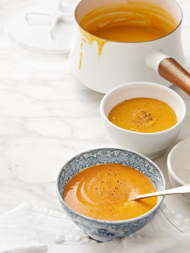

Basic Squash Soup

To lighten up this soup and make it vegan friendly, use homemade vegetable stock instead of chicken, and creme fraiche instead of double cream. This soup can keep up to a month in the freezer, or 3-4 days in the fridge.
Ingredients
- 2 tbsp. unsalted butter
- 1 medium potato
- 1 onion
- 3 cups of chicken stock/ vegetable stock or half a stock sube
- 1 small squash
- Nutmeg and/or dash of ground cinnamon/ground corriander
- (Optional)
- Crushed gingers or chilli flakes/power for a bit of kick
- Creme fraiche or double cream to garnish
- Chives for garnishing
Methods
- In a large pot, melt the butter
- Add onions and spices, gingers and chilli power/flakes if using, cook until the onions brown, stir regularly
- Add the poatoes and squash, stir for 2 minutes
- Add water and stock cube, or fresh stock, bring to boil
- Add seasoning (salt), however do not season if use premade stock cubes, as they are already salty
- Cover and reduce to low, cook for 10 minutes or until squash and potatoes are soft
- Puree the soup using a blender
- Garnish with herbs of choice, pepper and dollop of creme fraiche or double cream
Venison steak, served with beetroot and broccoli
In comparison to beef, venison is leaner and have a more liver-like taste. Hence it tends to pair better with sweet and berry flavoured. There is no set time to cook steak, as it depends on the cut and thickness of the meat, the best way to test how done the steak is by touch it using the Steak Touch Test. Over time you will get a feel of how your steak feel like.
Ingredients
- 2 Beetroots
- 2 Venison fillets
- Vinegar ( apple cider or red wine)
- Broccoli
- Potatoes
Methods
- Halves or quartered the potatoes, boil the potatoes
- Cut the beetroots into small chunks, boil the beetroots, add a dash of vinegar and salt
- Boil the broccoli
- Rub the venison with salt and pepper
- Heat the pan with olive oil and small cube of butter on high heat
- Fry the steak when the oil shimmered. Approximately 3-4 minutes for medium
- (Optional)
- Serve the steak with boiled potatoes, beetroots and broccoli. Spoon over some of the sauce from the pan.
- Add a dash of port and a spoon of red currant jelly to the heated pan which was frying the venison